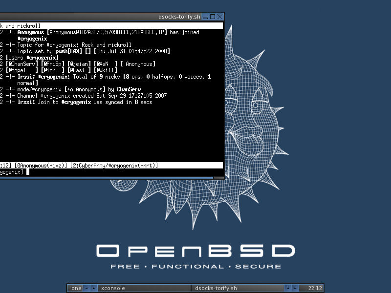
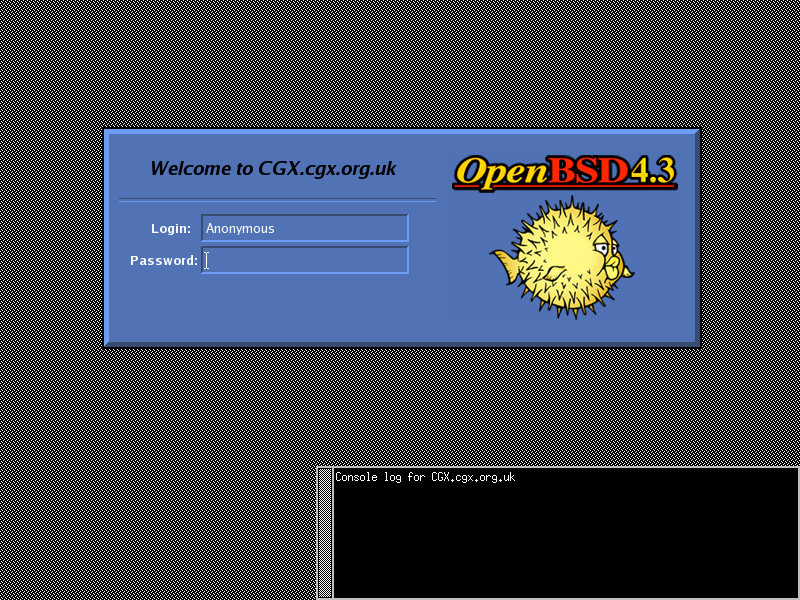
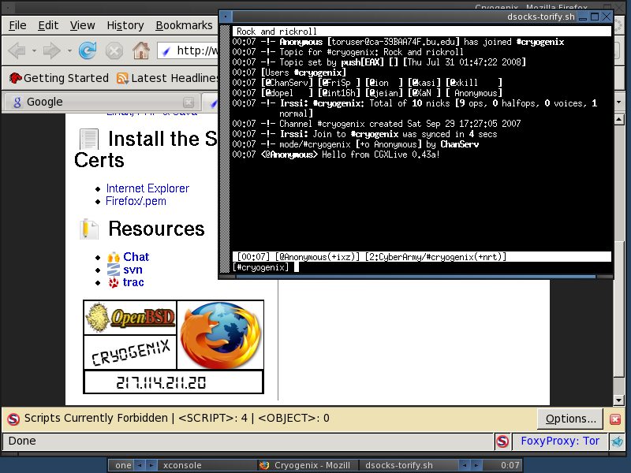

Articles —
Projects —
LinkedIn —
Github —
Twitter —
Mastodon —
Bluesky —
About
CGXLive - OpenBSD Live ISO
About
CGXLive was a live CD/DVD ISO distribution based on OpenBSD. Tor and Privoxy
are started at boot-time to enable instant secure-ish internet browsing
and communication. Remember! Tor isn’t perfect, we recommend you still
use additional security layers such as SSL/TLS on top of the Tor
Network. OpenVPN is also available should you wish to join a network.
Screenshots



Featured Software (0.43a)
- OpenBSD 4.3; OpenSSL 0.9.7j; OpenSSH 4.8; Xorg 7.3
- fluxbox-0.9.15.1p1 - A nice, light-weight WM
- BitchX-1.0c18p3 - ircII on LSD
- cryptcat-1.2.1p0 - Netcat->encrypted()
- dsocks-1.6 - *BSD SOCKS Wrapper
- enigmail-0.95.5p0 - GnuPG for Thunderbird
- ettercap-0.6.bp5 - multipurpose LAN sniffer/interceptor/logger
- irssi-0.8.12p1 - Modern IRC Client
- irssi-silc-1.1.3p0 - SILC Plugin for irssi
- irssi-icb-0.14p1 - ICB support for irssi
- john-1.7.0.2p1 - He’s a famous cracker.
- kismet-200710R1 - 802.11x Sniffer
- links-1.00pre20 - Text browser
- minicom-2.2 - Serial Console
- mozilla-firefox-2.0.0.12 - A Modern Browser
- mozilla-thunderbird-2.0.0.12 - Graphical E-Mail/RSS Client
- mutt-1.4.2.3 - E-mail Client
- nano-2.0.7 - Pico-clone, for those who can’t Vi
- nasm-0.98.38p0 - The Netwide x86 Assembler
- ncftp-3.2.1 - A nice FTP client
- netcat - Telnet on Coke (OpenBSD version)
- nikto-2.02 - Web/CGI Vuln Scanner
- nmap-4.53 - Port Scanner / Host Fingerprinter
- nmap-zenmap-4.53 - GUI Frontend for nmap
- openvpn-2.0.9p1 - Flexible VPN System
- p0f-2.0.8p0 - Passive OS Fingerprinting
- pidgin-2.3.1p0 - Multi-protocol IM client
- pidgin-otr-3.1.0p0 - Off-the-Record Messaging Plugin
- privoxy-3.0.3p0 - Flexible Web Proxy
- python-2.4.4p6 - For those who can’t Pr3l.
- python-2.5.2 - As above.
- radiusniff-0.2 - RADIUS Sniffer
- radiusreport-0.3b6 - RADIUS log file analysis tool
- rdesktop-1.5.0p1 - TermServ Client
- rsync-2.6.9 - Remote Sync
- samba-3.0.28-cups - SMB/CIFS Client/Server
- silc-client-1.1.3 - SILC Client (> IRC)
- silc-toolkit-1.1.5 - SILC Toolkit
- sleuthkit-2.51 - Forensic Toolkit
- smbsniff-0.0.1bp0 - SMB/Lanman Sniffer
- smtpscan-0.5p0 - Detect remote SMTPd version
- sniffit-0.3.7b - Packet sniffer
- snort-2.8.0.1 - Sniffer/IDS
- snownews-1.5.9 - Text-mode RSS Reader
- socat-1.6.0.0p0 - netcat++ / Multipurpose relay
- ssldump-0.9b3p0 - SSLv3/TLS Analyzer
- sslsniffer-1.21 - SSL/TLS Sniffer
- strobe-1.06 - Very fast port scanner
- stunnel-4.20 - SSL Wrapper
- terminal-0.2.8 - vte-based terminal
- tightvnc-1.2.9p1 - VNC
- tightvnc-viewer-1.2.9p0 - VNC Client
- tin-1.8.3 - Text-mode NNTP/UseNet Reader
- tor-0.1.2.19 - Onion Routing daemon
- vlc-0.8.6e - VideLan Client
- x3270-3.3.6p1 - 3270 console
- xpdf-3.02pl2p2 - A motif PDF reader
${HOME}

{kind=link}
{kind=link}
{kind=link}